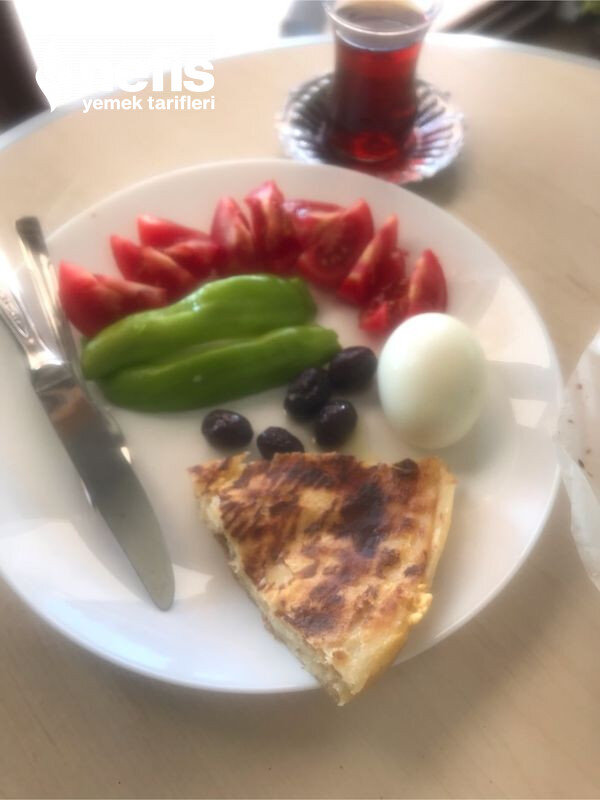

🍽️ 2-4 kişilik⏱️ Hazırlık: 10 dk🔥 Pişirme: 20 dk🏷️ Hamur İşi Tarifleri🏷️ Börek Tarifleri
Malzemeler
- Önceden hazırladığımız yumuşacık 6-7 lavaş
- 1 bardak süt (200 ml)
- 1 yumurta
- 1 bardak rendelenmiş peynir
- İstenirse peynire karabiber, pulbiber
- Yarım bardak zeytinyağı
- Fırın kağıdı
Hazırlanışı
- Süt, yumurta ve sıvı yağ çırpıyoruz.
- Fırın kağıdı koyduğumuz tavaya ilk lavaşı alıyoruz.
- Hazırladığımız sıvı karışımdan 4-5 kaşık lavaşın üzerine gezdiriyoruz.
- Üzerine peynir serpeliyoruz.
- Diğer lavaşı da üzerine alıyoruz ve aynı işlemleri tekrarlıyoruz.
- Son lavaşın üzerine kalan sıvı karışımı ilave ediyoruz.
- Tavanın kapağını kapatıp orta ateşte pişiriyoruz.
- Alt tarafı pişince düz bir tabağa ters çevirip alt tarafının pişmesi için tavaya aktarıyoruz.
- Diğer tarafı da pişen böreğimizi 4-5 dakika dinlendirip, istediğimiz zaman servis ediyoruz. Nefis böreğimiz hazır. Afiyet olsun 😊